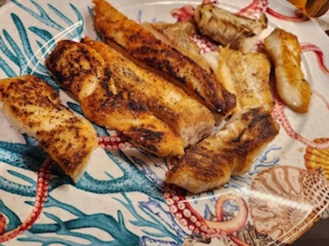

Pan seared halibut with white wine cream sauce

My mother enjoys seafood very much, and has it for her birthday every year. This is the meal she had this year.
A quote from my mother: I love seafood so much and I ask for a seafood dinner every year for my birthday and am so glad my husband and son made this for me for my birthday
| Ingredients |
- 3 lbs of halibut cut into 4 oz portions
- 1/2 diced onion
- 1 cup of heavy cream
- 2 cups dry white wine
|
| Instructions |
- Salt and pepper each side of the halibut portions
- Sear on one side for 5 minutes and flip.
- Cook the other side of the halibut until the dish reaches an internal temperature of 125˚
- Remove halibut from pan and replace with 1/2 diced onion
- Cook until soft, then deglaze pan with 2 cups dry white wine
- Reduce by half then add 1 cup of heavy cream
- Salt and pepper to taste then serve immediately
|
| Makes 6 - 8 servings |
|
| Tips and Substitutions |
- The sause can also be used on other dishes and sides such as potato salad
- This dish goes well with sides like potato salad and green beans
|